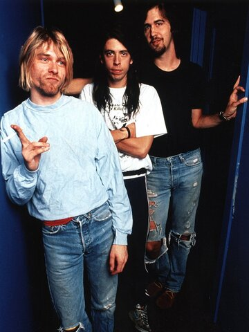
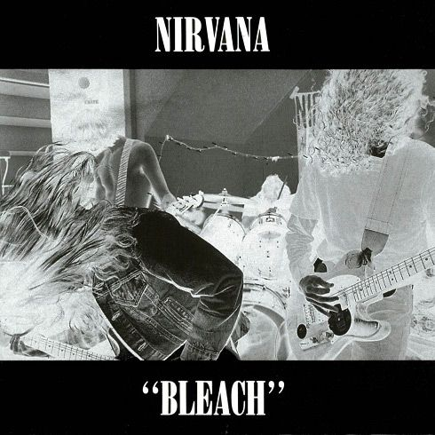
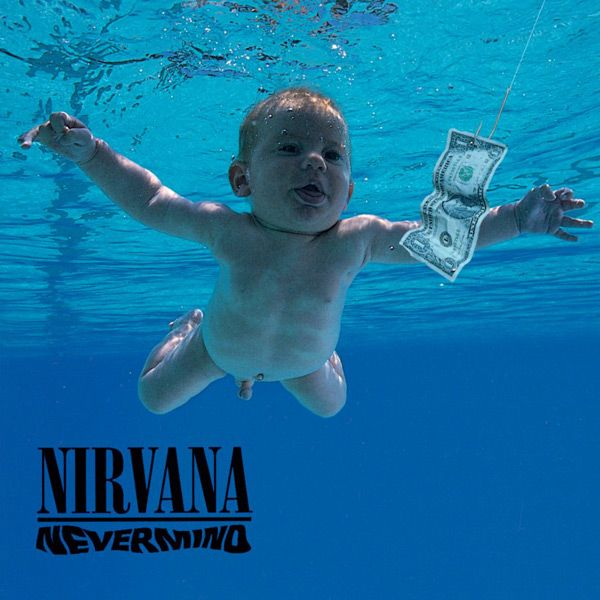
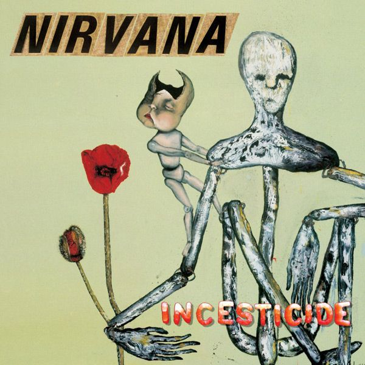
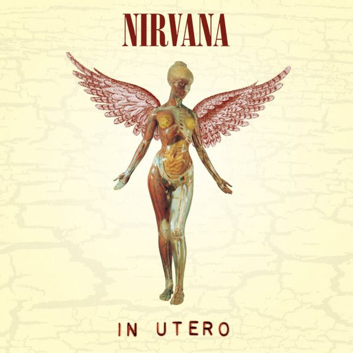
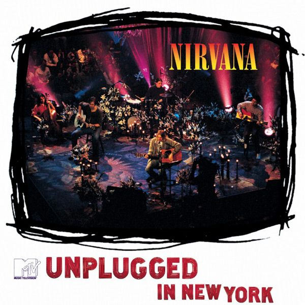
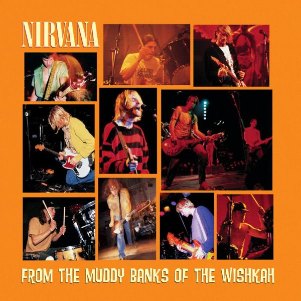

Nirvana
Seattle Grunge Band
Nirvana was an American rock band formed in Aberdeen, Washington, in 1987. Founded by lead singer and guitarist Kurt Cobain and bassist Krist Novoselic, the band went through a succession of drummers, most notably Chad Channing, before recruiting Dave Grohl in 1990. Nirvana's success popularized alternative rock, and they were often referenced as the flagship band of Generation X. Their music maintains a popular following and continues to influence rock culture.

Biography
In the late 1980s, Nirvana established itself as part of the Seattle grunge scene. They released their first album, Bleach, on the independent record label Sub Pop in 1989. Their sound relied on dynamic contrasts, often between quiet verses and loud, heavy choruses. After signing to the major label DGC Records in 1990, Nirvana found unexpected mainstream success with "Smells Like Teen Spirit", the first single from its landmark second album, Nevermind (1991). A cultural phenomenon of the 1990s, Nevermind was certified thirteen-times platinum in the US and is credited with ending the popularity of hair metal.
Characterized by a punk aesthetic, Nirvana's fusion of pop melodies with noise, combined with its themes of abjection and social alienation, brought them global popularity. Following extensive touring and the 1992 compilation album Incesticide and EP Hormoaning, the band released its highly anticipated third studio album, In Utero (1993). The album topped both the US and UK album charts, and was acclaimed by critics. However, in April 1994, Nirvana disbanded following Cobain's suicide. Further releases have been overseen by Novoselic, Grohl, and Cobain's widow, Courtney Love. The live album MTV Unplugged in New York (1994) won Best Alternative Music Performance at the 1996 Grammy Awards.
Nirvana is one of the best-selling music artists of all time, having sold more than 75 million records worldwide, including certified sales of 60 million in the US. During its three years as a mainstream act, Nirvana received an American Music Award, Brit Award, and Grammy Award, as well as seven MTV Video Music Awards and two NME Awards. The band achieved five number-one hits on the Billboard Alternative Songs chart and four number-one albums on the Billboard 200. In 2010, Rolling Stone ranked Nirvana 30th on its list of the 100 Greatest Artists of All Time. They were inducted into the Rock and Roll Hall of Fame in 2014, their first year of eligibility. In 2023, they received the Grammy Lifetime Achievement Award.
Learn more about Nirvana"When I write a song the lyrics are the least important subject. I can go through two or three different subjects in a song and the title can mean absolutely nothing at all. - Kurt Cobain"
Albums Gallery

Bleach
1989, Sub Pop

Nevermind
1991, DGC

Incesticide
1992, DGC

In Utero
1993, DGC

MTV Unplugged
1994, DGC

From the Muddy Banks of the Wishkah
1996, DGC